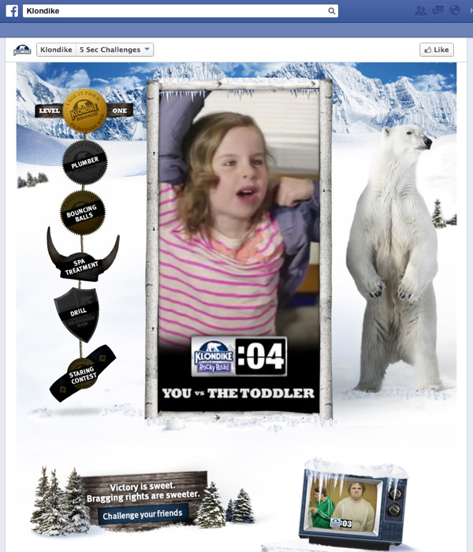
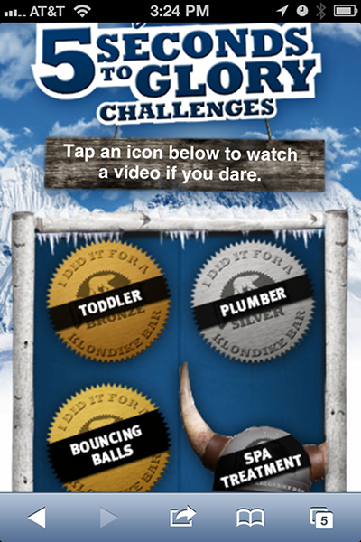
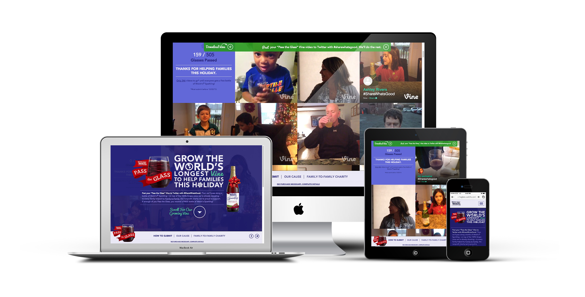
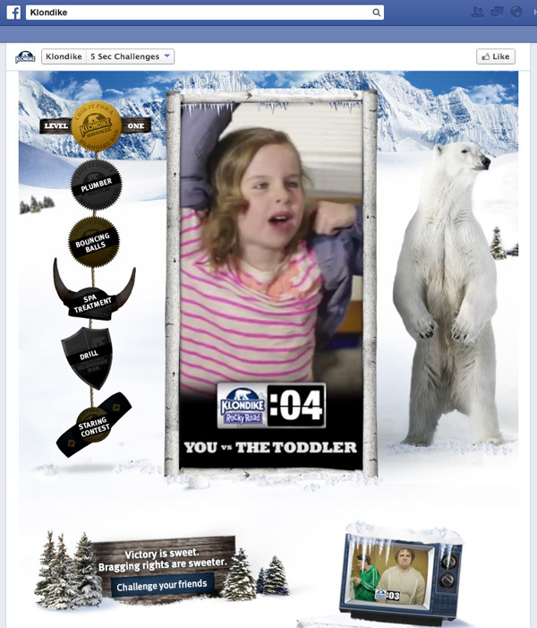
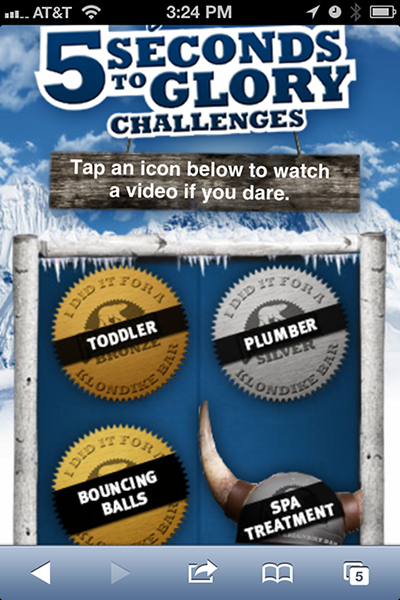

Klondike Facebook App
I built the Klondike 5 Second Challenges Facebook app with HTLM, CSS and jQuery. On desktop and tablet, the app lived on facebook, and on mobile, it could be found at klondike5secondchallenges.com.
 These are projects where I was the lead front-end developer, or contributed to the coding.
I was the lead developer on this responsive microsite. I built mobile-up and made use of bootstrap for the navigation elements.
This site was supporting a promotional campaign that over the Holiday period. It collected much hype after the launch, and eventually the New York Times printed a story covering the campaign.
View the site: passtheglass.welchs.com, or check out this video capture:
I built the Klondike 5 Second Challenges Facebook app with HTLM, CSS and jQuery. On desktop and tablet, the app lived on facebook, and on mobile, it could be found at klondike5secondchallenges.com.
 This single page application was a fun change to explore some jQuery animations. I built this page using HTML, CSS3 and jQuery.
The page is no longer live, but see it in action in this video capture:
I built this microsite to showcase the VIA Agency for an awards submission. I used CSS3 and jQuery primarily, and the BigVideo.js plugin for the background video.
The page is no longer live, but see it in action in this video capture:
I was involved in building out several areas of the recent welchs.com build. One such area was the slider on the history page, which I built by writing jQuery to customize a plugin and designing based off of conventions on the site and UI heuristics.
Visit this page on welchs.com or check out the video caputure:
Welchs.com recently was named SiteFinity Consumer Goods and Services Site of the Year!